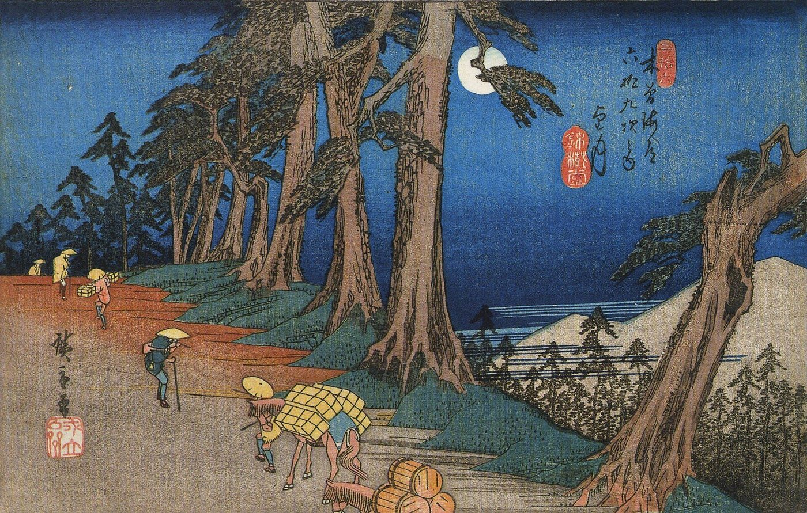

スパイラルダイナミクス › 9 / 10
見落としやすい点
段階を知るほど、目の前の人を色で決めたくなる。スパイラルダイナミクスを格付けや性格診断にしないために、グレイヴスとケン・ウィルバーの重心・線・状態の考え方、進行と後退、日本語の発達段階との関係、理論の学術的な位置づけをたどります。

八つの段階を読んだあと、目の前の人を色で見分けたくなることがあります。けれど、スパイラルダイナミクスの地図が人を理解する助けから離れやすいのも、まさにそのときです。
この地図は、人を固定した箱へ入れるためのものではなく、置かれた条件のなかで何を大切にし、どう世界を見ているかを考えるための枠組みとされます。段階を覚える前に、あるいは覚えたあとにこそ、知っておきたい注意点があります。
スパイラルダイナミクスで人を分類しない
人には「重心」がある
ある人を橙と呼ぶとき、それはその人のすべてが橙である、という意味ではありません。段階は、その人の「重心」を表すものです。たとえば半分は橙にあり、四分の一は緑へ伸び、残る四分の一は青にとどまっている、という混ざり方もありえます。
一つの色にきれいに収まらないことは、地図の失敗ではありません。人は少しずつ移り、以前の価値観を残しながら次の見方を身につけていくからです。国や会社のような大きな集団では、地域、世代、部門によって重心が異なることもあります。
ある人を橙と呼ぶとき、それはその人のすべてが橙である、という意味ではありません。段階は、その人の「重心」を表すものです。たとえば半分は橙にあり、四分の一は緑へ伸び、残る四分の一は青にとどまっている、という混ざり方もありえます。
一つの色にきれいに収まらないことは、地図の失敗ではありません。人は少しずつ移り、以前の価値観を残しながら次の見方を身につけていくからです。国や会社のような大きな集団では、地域、世代、部門によって重心が異なることもあります。
段階だけでは人を見られない
この理論を統合理論に取り入れたケン・ウィルバーは、段階のほかに三つの軸を示しました。状態は、目覚め、睡眠、深い瞑想、悲しみといった、その時々のありようです。型は、男性的か女性的か、性格の類型は何かといった持ち味を指します。線は、認知、価値観、感情、道徳、人間関係、仕事、健康、精神性など、それぞれの領域の発達を見ます。
そのため、思考の面では橙でも、道徳の面では赤に近い、という組み合わせが起こりえます。理屈を整然と語れても、他者を傷つけることへのためらいが薄い場合です。反対に、精神性の線は高くても、お金や人間関係では別の課題を抱えることがあります。育ち方には偏りがあり、すべての線が同じ段階にそろう人はほとんどいない、とされています。自分を見る際には、自分は何色かと問うより、この「線」ではどの段階かと領域を定めるほうが、輪郭をつかみやすくなります。
この理論を統合理論に取り入れたケン・ウィルバーは、段階のほかに三つの軸を示しました。状態は、目覚め、睡眠、深い瞑想、悲しみといった、その時々のありようです。型は、男性的か女性的か、性格の類型は何かといった持ち味を指します。線は、認知、価値観、感情、道徳、人間関係、仕事、健康、精神性など、それぞれの領域の発達を見ます。
そのため、思考の面では橙でも、道徳の面では赤に近い、という組み合わせが起こりえます。理屈を整然と語れても、他者を傷つけることへのためらいが薄い場合です。反対に、精神性の線は高くても、お金や人間関係では別の課題を抱えることがあります。育ち方には偏りがあり、すべての線が同じ段階にそろう人はほとんどいない、とされています。自分を見る際には、自分は何色かと問うより、この「線」ではどの段階かと領域を定めるほうが、輪郭をつかみやすくなります。
神秘的な体験と段階は別のもの
深い瞑想で宇宙との一体感を覚えたとしても、日常の重心が橙なら、その重心まで変わるわけではありません。状態と段階は別の軸であり、神秘的な体験はどの段階でも起こりうるとされます。
ただし、体験をどう受け取るかは、いる段階の見方に影響されます。青にいる人なら、それを自分の宗教だけが正しい証明として受け止めやすい。緑では「すべての宗教は一つ」と捉えられ、黄では「どの宗教も部分的に正しい視点」と見ることがあります。この理論では、目覚めと発達は二つの異なる道であり、一方の経験が他方の成長を自動的に進めるものではない、とされています。
深い瞑想で宇宙との一体感を覚えたとしても、日常の重心が橙なら、その重心まで変わるわけではありません。状態と段階は別の軸であり、神秘的な体験はどの段階でも起こりうるとされます。
ただし、体験をどう受け取るかは、いる段階の見方に影響されます。青にいる人なら、それを自分の宗教だけが正しい証明として受け止めやすい。緑では「すべての宗教は一つ」と捉えられ、黄では「どの宗教も部分的に正しい視点」と見ることがあります。この理論では、目覚めと発達は二つの異なる道であり、一方の経験が他方の成長を自動的に進めるものではない、とされています。
段階は上がるだけなのか
次へ進むとは、下を捨てることではない
上の段階へ移ることは、以前の段階を切り捨てることではありません。この考え方は「超えて含む」と表されます。橙から緑へ向かう場合、働く力、合理性、自立といった橙の健全な部分を持ちながら、不健全な部分を手放していく、という見方です。
下の段階を裁きたくなるときは、その段階をまだ十分に含められていないことを示す場合があります。そこで否定したくなるもののなかに、学び直す必要のある健全な働きが残っている、と考えられます。
上の段階へ移ることは、以前の段階を切り捨てることではありません。この考え方は「超えて含む」と表されます。橙から緑へ向かう場合、働く力、合理性、自立といった橙の健全な部分を持ちながら、不健全な部分を手放していく、という見方です。
下の段階を裁きたくなるときは、その段階をまだ十分に含められていないことを示す場合があります。そこで否定したくなるもののなかに、学び直す必要のある健全な働きが残っている、と考えられます。
条件によって戻ることもある
グレイヴスは、この階段に時間の保証はなく、進むことも戻ることもありうると書いています。重心が安定していれば、日常では以前の段階へ戻らないとされます。けれども、命が脅かされるとき、職を失って家族を養えなくなったとき、暴力が支配する環境に置かれたとき、脳や体を病んだときには、一段か二段ほど一時的に下がることがあります。
脅威が去れば戻ることが多い一方、社会全体が極端な欠乏に置かれた場合には、多くの人が同時に戻ることもありえます。上の段階にいることは、得た資格というより、そのあり方を保てる条件のなかにいる状態でもあります。
グレイヴスは、この階段に時間の保証はなく、進むことも戻ることもありうると書いています。重心が安定していれば、日常では以前の段階へ戻らないとされます。けれども、命が脅かされるとき、職を失って家族を養えなくなったとき、暴力が支配する環境に置かれたとき、脳や体を病んだときには、一段か二段ほど一時的に下がることがあります。
脅威が去れば戻ることが多い一方、社会全体が極端な欠乏に置かれた場合には、多くの人が同時に戻ることもありえます。上の段階にいることは、得た資格というより、そのあり方を保てる条件のなかにいる状態でもあります。
段階を飛ばして進むことはできない
橙から黄へは、その間にある緑を通らずに進めるものではないとされます。そして、ただ通過するだけでは足りません。それぞれの段階には学ぶことがあり、その段階に十分に浸って、飽きるまでいることが勧められています。
生活の基盤が整わないまま瞑想や精神性へ急ぐことは、土台のない家に似ています。また、早く上へ行こうとする焦りには、段階を格付けとして見てしまう気持ちが混じることもあります。行き詰まりを感じる場面では、さらに上を求めるのではなく、まだ身についていない下の段階の健全な働きを見直すことが、次の変化につながる場合があります。
橙から黄へは、その間にある緑を通らずに進めるものではないとされます。そして、ただ通過するだけでは足りません。それぞれの段階には学ぶことがあり、その段階に十分に浸って、飽きるまでいることが勧められています。
生活の基盤が整わないまま瞑想や精神性へ急ぐことは、土台のない家に似ています。また、早く上へ行こうとする焦りには、段階を格付けとして見てしまう気持ちが混じることもあります。行き詰まりを感じる場面では、さらに上を求めるのではなく、まだ身についていない下の段階の健全な働きを見直すことが、次の変化につながる場合があります。
一つの段階にも「四つの局面」がある
一つの段階のなかにも、移り変わりがあります。まず、次の段階を理解できず、ばかにしてしまう入口の前があります。次に、新しい世界を見つけて熱中する入口が訪れます。この時期には、その考えを周囲へ熱心に語り、以前と変わったように見られることがあります。
経験を重ねて落ち着く定着ののち、長くその段階にいたことで限界が見え、退屈や行き詰まりを覚える出口へ至ります。出口では、次の扉となる本や人との出会いを待つことになります。段階そのものだけでなく、いま入口にいるのか出口にいるのかを見ることで、現在地の見え方も変わります。
一つの段階のなかにも、移り変わりがあります。まず、次の段階を理解できず、ばかにしてしまう入口の前があります。次に、新しい世界を見つけて熱中する入口が訪れます。この時期には、その考えを周囲へ熱心に語り、以前と変わったように見られることがあります。
経験を重ねて落ち着く定着ののち、長くその段階にいたことで限界が見え、退屈や行き詰まりを覚える出口へ至ります。出口では、次の扉となる本や人との出会いを待つことになります。段階そのものだけでなく、いま入口にいるのか出口にいるのかを見ることで、現在地の見え方も変わります。
生活の条件が価値観を形づくる
グレイヴスの理論では、段階は生活の条件への答えとされています。森に住む動物と砂漠に住む動物で必要なものが異なるように、人もまた、置かれた条件に応じた価値観をつくります。人間にとって、その条件の多くは、自分たちが築いた社会によるものです。
社会の重心が橙なら、そこで育つ人は特別な努力をしなくても橙まで引き上げられやすくなります。その社会の重心を越えて進むことは簡単ではなく、家族や友人との関係のなかで引き戻されることもあります。
緑や黄にいる人には、安定した国で生まれ、学校に通い、暴力のない家庭で育ち、本と情報に触れられた条件がある場合があります。それは運です。同じ人が別の場所に生まれていれば、青にいたかもしれません。こうした見方は、地域や、自分より下と見える段階の人を裁く理由がないことを示しています。
グレイヴスの理論では、段階は生活の条件への答えとされています。森に住む動物と砂漠に住む動物で必要なものが異なるように、人もまた、置かれた条件に応じた価値観をつくります。人間にとって、その条件の多くは、自分たちが築いた社会によるものです。
社会の重心が橙なら、そこで育つ人は特別な努力をしなくても橙まで引き上げられやすくなります。その社会の重心を越えて進むことは簡単ではなく、家族や友人との関係のなかで引き戻されることもあります。
緑や黄にいる人には、安定した国で生まれ、学校に通い、暴力のない家庭で育ち、本と情報に触れられた条件がある場合があります。それは運です。同じ人が別の場所に生まれていれば、青にいたかもしれません。こうした見方は、地域や、自分より下と見える段階の人を裁く理由がないことを示しています。
段階と賢さ・道徳を混同しない
段階は人格の点数ではない
判断、憎しみ、依存、恐れ、投影、独断、自己欺瞞、権力の乱用、嘘、怠惰、病、そして愛は、どの段階にも起こります。赤の暴君も子を愛することがあり、青緑の導師も権力を乱用することがあります。
裁く人は青、商売をする人は橙、といった当てはめは、この理論の見方ではありません。商売はどの段階にもあり、段階ごとに異なる姿を取るだけです。ここで示されるのは、どれほど多くの視点を取れるかという一点であり、知能や人格の良さと同じものではありません。
判断、憎しみ、依存、恐れ、投影、独断、自己欺瞞、権力の乱用、嘘、怠惰、病、そして愛は、どの段階にも起こります。赤の暴君も子を愛することがあり、青緑の導師も権力を乱用することがあります。
裁く人は青、商売をする人は橙、といった当てはめは、この理論の見方ではありません。商売はどの段階にもあり、段階ごとに異なる姿を取るだけです。ここで示されるのは、どれほど多くの視点を取れるかという一点であり、知能や人格の良さと同じものではありません。
隣の段階は理解しにくい
第一層の段階は、互いに反発しやすいとされます。青は橙を物質主義で神を忘れた者と見て、橙は青を理屈の通じない狂信者と見ます。緑は橙を人を搾取する商売人と捉え、橙は緑を甘い理想家と見ることがあります。黄であっても、緑を感情的なお人好しと受け取る場合があります。
ここで大切なのは、健康か不健康か、正気か狂気か、という言葉自体が、段階によって意味を変えるという点です。青にとって健全な秩序が橙には抑圧に映り、緑にとって健全な配慮が黄には甘さに見えることがあります。人が届きうる最も高いものほど、下の段階からは危険で異常に映ることもあります。誰かを「狂っている」と感じたとき、それは相手だけの性質ではなく、自分がどの場所から見ているかを知らせる情報でもあります。
第一層の段階は、互いに反発しやすいとされます。青は橙を物質主義で神を忘れた者と見て、橙は青を理屈の通じない狂信者と見ます。緑は橙を人を搾取する商売人と捉え、橙は緑を甘い理想家と見ることがあります。黄であっても、緑を感情的なお人好しと受け取る場合があります。
ここで大切なのは、健康か不健康か、正気か狂気か、という言葉自体が、段階によって意味を変えるという点です。青にとって健全な秩序が橙には抑圧に映り、緑にとって健全な配慮が黄には甘さに見えることがあります。人が届きうる最も高いものほど、下の段階からは危険で異常に映ることもあります。誰かを「狂っている」と感じたとき、それは相手だけの性質ではなく、自分がどの場所から見ているかを知らせる情報でもあります。
確認バイアスはどこにいても起こる
どの段階でも、人は自分の見方を裏づける事実を集め、それ以外を見落としやすいものです。青は自分の文化を脅かす材料に目を向け、橙は理想主義が国を壊す例を集め、緑は環境が壊れていく証拠を見ます。黄は第一層が争うことで世界が危うくなるという話へ傾き、青緑はすべてが計画どおりに進んでいると見ることがあります。
そこにはそれぞれ一片の真実があり、同時に偏りもあります。自分の段階の外から眺めることは、生まれつき備わった能力ではなく、練習を要する技能とされています。
どの段階でも、人は自分の見方を裏づける事実を集め、それ以外を見落としやすいものです。青は自分の文化を脅かす材料に目を向け、橙は理想主義が国を壊す例を集め、緑は環境が壊れていく証拠を見ます。黄は第一層が争うことで世界が危うくなるという話へ傾き、青緑はすべてが計画どおりに進んでいると見ることがあります。
そこにはそれぞれ一片の真実があり、同時に偏りもあります。自分の段階の外から眺めることは、生まれつき備わった能力ではなく、練習を要する技能とされています。
見通せる先には限りがある
今いる段階から見えるのは、一つ上、せいぜい二つ上までとされます。橙から緑は見えても、青緑までは見えにくいものです。そのため、三つ上の段階の本を渡されても、意味が分からないか、詐欺のように思えることがあります。
同じ理由から、自分を伸ばす存在としては、三つ上の師より一つか二つ上の師が挙げられます。想像力を広げながらも、現実感覚を失わずにいられる距離だからです。上の段階への移行は論理だけでは起こらず、橙から緑へは心を開くことを通じ、緑から黄へは、まだ見えていない別の何かを通じて進むとされます。その変化は、発見に似ています。
今いる段階から見えるのは、一つ上、せいぜい二つ上までとされます。橙から緑は見えても、青緑までは見えにくいものです。そのため、三つ上の段階の本を渡されても、意味が分からないか、詐欺のように思えることがあります。
同じ理由から、自分を伸ばす存在としては、三つ上の師より一つか二つ上の師が挙げられます。想像力を広げながらも、現実感覚を失わずにいられる距離だからです。上の段階への移行は論理だけでは起こらず、橙から緑へは心を開くことを通じ、緑から黄へは、まだ見えていない別の何かを通じて進むとされます。その変化は、発見に似ています。
地図もまた一つの視点である
段階は、座って内省するだけで見つかるものではありません。世界各地の集団を調べた資料から浮かび上がる型であり、伝統的な宗教の多くは高い状態に詳しくても、段階という考えを持っていないとされます。
この地図は黄の段階が作った道具であり、黄の限界も持ちます。この理論では、絶対の側から見れば意識は一つで、段階は相対の世界の中の構造にすぎないとされています。地図は土地ではありません。土地を歩くための助けにはなっても、人に貼りつける札にはなりません。
段階は、座って内省するだけで見つかるものではありません。世界各地の集団を調べた資料から浮かび上がる型であり、伝統的な宗教の多くは高い状態に詳しくても、段階という考えを持っていないとされます。
この地図は黄の段階が作った道具であり、黄の限界も持ちます。この理論では、絶対の側から見れば意識は一つで、段階は相対の世界の中の構造にすぎないとされています。地図は土地ではありません。土地を歩くための助けにはなっても、人に貼りつける札にはなりません。
段階を育てるために挙げられること
視点を広げるための方法
何もしなければ、一段上がるまでに十年か二十年かかると言われます。変化を速める方法としては、瞑想と気づきの練習、内省と日記、自分より上の段階の本を読むこと、上の段階の友人を持つこと、一人で数日こもる時間、観光ではない旅でまったく異なる文化のなかに暮らすことが挙げられています。
これらは、自分の視点がいかに狭かったかに気づくためのものです。幻覚剤を挙げる人もいますが、ここでは扱いません。日本では違法で、危険です。
一つの段階を身につけるための手順としては、その段階の健全な手本を一人見つけ、考え方と価値観を学び、真似て、その段階が満たそうとしている必要を自分でも満たすことが示されています。そして、そこに居着かず次へ進みます。どの段階にも不健全な手本のほうが多いため、手本は健全なものを選ぶことが大切とされています。
何もしなければ、一段上がるまでに十年か二十年かかると言われます。変化を速める方法としては、瞑想と気づきの練習、内省と日記、自分より上の段階の本を読むこと、上の段階の友人を持つこと、一人で数日こもる時間、観光ではない旅でまったく異なる文化のなかに暮らすことが挙げられています。
これらは、自分の視点がいかに狭かったかに気づくためのものです。幻覚剤を挙げる人もいますが、ここでは扱いません。日本では違法で、危険です。
一つの段階を身につけるための手順としては、その段階の健全な手本を一人見つけ、考え方と価値観を学び、真似て、その段階が満たそうとしている必要を自分でも満たすことが示されています。そして、そこに居着かず次へ進みます。どの段階にも不健全な手本のほうが多いため、手本は健全なものを選ぶことが大切とされています。
日本語でいう発達段階との関係
人が段階を順に通って育つという考え方は、日本語では「発達段階」という言葉で教育や心理学のなかにあります。日本語版ウィキペディアの「発達段階理論」には、ピアジェの認知発達、エリクソンの心理社会的発達、コールバーグの道徳性発達、マズローの自己実現理論などが並び、そのなかにグレイヴスの理論とベックとコーワンのスパイラルダイナミクスも含まれています。
ただし項目の冒頭では、発達には個人差があり、複数の領域にわたって順を追いながらも同時に起こると見るのが発達心理学者の一般的な立場だと書かれています。ここで述べた「線」は、日本語の発達心理学でいう「複数の領域」と重なる見方です。
このページの内容をまとめると、段階は格付けではなく、その人が置かれた生活の条件にどう答えるかを示す枠組みです。人は一つの色だけでできているのではなく、重心、はみ出し、そして線ごとの違いを持ちます。上へ進むこともあれば戻ることもあり、段階を飛ばすことはできません。人に色を貼った瞬間、その貼り方自体が第一層の特徴を表している場合があります。
最後に、この理論の外側からの評価も置いておきます。英語版ウィキペディアは、この理論が主流の学術的な裏づけを欠くと冒頭に書いています。ここで扱った「重心」「線」「四つの局面」も、研究で確かめられた事実ではなく、この理論を用いる人たちの経験則です。地図は土地ではない、という注意を添えながら、自分を見るための道具として扱うことが求められます。
最後に、この理論の外側からの評価も置いておきます。英語版ウィキペディアは、この理論が主流の学術的な裏づけを欠くと冒頭に書いています。ここで扱った「重心」「線」「四つの局面」も、研究で確かめられた事実ではなく、この理論を用いる人たちの経験則です。地図は土地ではない、という注意を添えながら、自分を見るための道具として扱うことが求められます。
出典・参考
- Actualized.org, Spiral Dynamics - Important Insights & Nuances（YouTube）重心、超えて含む、恵まれた環境の自覚、視点の数としての段階、状態・型・線の区別、どの段階にも起きること、段階が互いをどう見るか、確認バイアス、退行、四つの局面、上るための方法。引用は自動生成の字幕による
- Spiral Dynamics（英語版ウィキペディア）段階は生活の条件への答えであり、それ自体として良くも悪くもないという理論の立場。ウィルバーの「線」の枠組み。学術的な裏づけを欠くという評価
- Clare W. Graves（英語版ウィキペディア）進むことも戻ることもありうる、時間の保証はない、というグレイヴス自身の立場
- 発達段階理論（ウィキペディア）日本語で読める発達段階の理論の一覧。グレイヴスとスパイラルダイナミクスも項目に含まれている